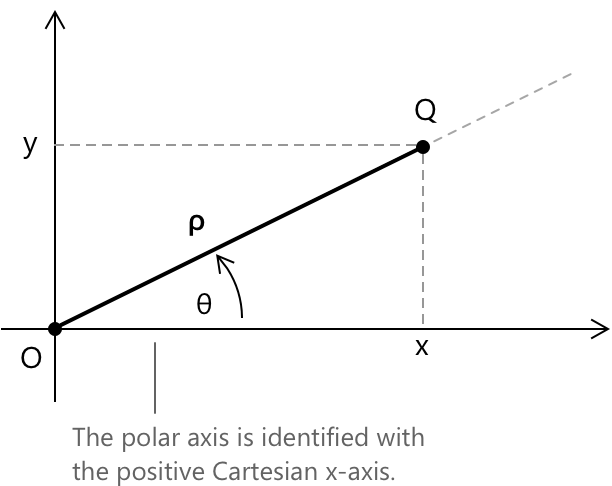
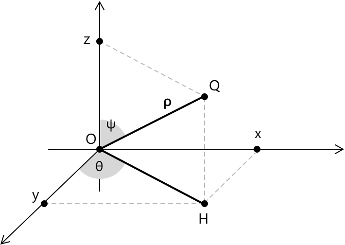

Полярні координати
Радіально-кутовий опис точки
Декартова система координат описує точку на площині шляхом її проектування на дві перпендикулярні осі. Таке представлення надає перевагу горизонтальному та вертикальному напрямкам. Існують, однак, ситуації, в яких відстань від фіксованої точки та напрямок відносно фіксованого променя є більш природними геометричними дескрипторами. Це призводить до полярної системи координат. Зафіксуємо на площині:
- Точку \( O \), яку називають полюсом.
- Довідний півпромінь, що виходить з \( O \), який називають полярною віссю.
- Орієнтацію проти годинникової стрілки.
Кожна точка \( Q \neq O \) визначає відстань від полюса \(\rho = |OQ|\) та орієнтований кут \( \theta \) між полярною віссю та променем \( OQ \). Впорядкована пара \((\rho, \theta)\) називається системою полярних координат для \( Q \). Перша компонента \( \rho \) називається радіус- вектором, а друга компонента \( \theta \) називається аномалією.

Нехай \( (x,y) \) — декартові координати \( Q \), а \( (\rho,\theta) \) — її полярні координати. Розглянемо прямокутний трикутник, утворений початком координат \( O \), точкою \( Q \) та її проекцією на вісь \( x \). Гіпотенузою є відрізок \( OQ \) довжиною \( \rho \), а кутом при вершині \( O \) є \( \theta \). Розклавши цей відрізок на горизонтальну та вертикальну компоненти, отримаємо:
\[ \begin{align} x &= \rho \cos\theta \\[6pt] y &= \rho \sin\theta \end{align} \]
Таким чином, точка відновлюється шляхом проектування відрізка довжиною \( \rho \), нахиленого під кутом \( \theta \) відносно полярної осі, по черзі на кожну координатну вісь. І навпаки, виходячи з декартового опису \( Q \), радіальна координата випливає безпосередньо з теореми Піфагора, застосованої до того самого прямокутного трикутника:
\[ \rho = \sqrt{x^2 + y^2} \]
Отже, величина \( \rho \) вимірює евклідову відстань від точки до початку координат, незалежно від напрямку, з якого вона наближається.
Визначення кута \(\theta\)
За даних декартових координат точки відновлення радіальної координати \( \rho \) є простим. Відновлення кутової координати \( \theta \) потребує більше уваги, оскільки відповідні тригонометричні функції не є ін'єктивними на повному колі, а наївний підхід через тангенс призводить до неоднозначності, яку необхідно розв'язати геометрично. Якщо \( x \neq 0 \), ми можемо поділити другу формулу перетворення на першу:
\[ \frac{y}{x} = \frac{\rho \sin\theta}{\rho \cos\theta} \]
Оскільки \( \rho > 0 \), множник \( \rho \) скорочується:
\[ \frac{y}{x} = \frac{\sin\theta}{\cos\theta} \]
За означенням функції тангенса отримаємо:
\[ \tan\theta = \frac{y}{x} \]
Однак це рівняння саме по собі не визначає \( \theta \) однозначно, оскільки:
\[ \tan\theta = \tan(\theta + \pi) \]
Правильний кут має бути обраний відповідно до квадранта, в якому лежить точка. На практиці \( \theta \) — це кут, що задовольняє умови:
\[ \cos\theta = \frac{x}{\rho} \qquad \sin\theta = \frac{y}{\rho} \]
Ці дві умови разом однозначно визначають \( \theta \), оскільки знаки \( \cos\theta \) та \( \sin\theta \) ідентифікують квадрант, усуваючи неоднозначність, що залишається при використанні лише тангенса.
Якщо \( Q = O \), то \(\rho = 0\). У цьому випадку кутова координата стає несуттєвою. Кожен промінь з полюса проходить через початок координат, тому кут не має геометричного значення. Таким чином, початок координат представляється як
\[ O = (0, \theta) \quad \forall \, \theta \]
Це відображає структурну особливість системи: кутова інформація зникає, коли радіальна відстань дорівнює нулю.
Неоднозначність полярного представлення
Полярні координати за своєю природою є неоднозначними. Для кожного цілого числа \( k \) маємо:
\[ (\rho,\theta) = (\rho,\theta + 2\pi k) \]
Більше того, та сама геометрична точка може бути представлена також шляхом зміни знака радіальної координати з одночасним додаванням \( \pi \) до кутової координати. Дійсно, зміна напрямку радіального відрізка та його поворот на пів оберту залишає кінцеву точку незмінною. Таким чином, отримаємо:
\[ (\rho,\theta) = (-\rho, \theta + \pi) \]
Отже, нескінченно багато пар представляють одну і ту саму геометричну точку. Щоб отримати канонічне представлення, зазвичай накладають умови:
\[ \rho \ge 0, \qquad \theta \in [0,2\pi) \]
Ця неоднозначність відображає ротаційну симетрію площини: кути є періодичними, а напрямки можуть бути пройдені у протилежних орієнтаціях.
Приклад 1
Щоб закріпити описану вище процедуру, розглянемо повний перехід від декартових до полярних координат. Обрана точка лежить у другій чверті, що є саме тим випадком, коли неоднозначність тангенса стає важливою і має бути розв'язана явно. Розглянемо точку:
\[ (x,y) = (-3,\ \sqrt{3}) \]
Почнемо з обчислення радіальної координати. Застосовуючи теорему Піфагора, маємо:
\[ \rho = \sqrt{(-3)^2 + (\sqrt{3})^2} = \sqrt{9 + 3} = 2\sqrt{3} \]
Тепер перейдемо до кутової координати. Тангенс \( \theta \) визначається як:
\[ \tan\theta = \frac{\sqrt{3}}{-3} = -\frac{\sqrt{3}}{3} \]
Як зазначалося в попередньому розділі, це рівняння має два розв'язання на \( [0, 2\pi) \), що відрізняються на \( \pi \). Щоб обрати правильне, зауважимо, що точка має \( x < 0 \) та \( y > 0 \), отже, вона лежить у другій чверті. Кут, що відповідає цій чверті:
\[ \theta = \frac{5\pi}{6} \]
Це можна перевірити безпосередньо:
\[ \cos\frac{5\pi}{6} = -\frac{\sqrt{3}}{2} < 0 \] \[ \sin\frac{5\pi}{6} = \frac{1}{2} > 0 \]
що відповідає знакам \( x \) та \( y \) відповідно.
Отже, одним із полярних представлень точки є:
\[ \left(2\sqrt{3},\ \frac{5\pi}{6}\right) \]
Приклад 2
Перехід у протилежному напрямку, від полярних до декартових координат, є більш прямим, оскільки він не потребує аналізу чвертей. Оберемо точку, полярна форма якої є простою, але декартова форма якої не є очевидною на перший погляд, щоб обчислення варто було виконати повністю. Розглянемо, наприклад, точку, задану в полярних координатах як:
\[ \left(\sqrt{6},\ \frac{7\pi}{4}\right)\]
Кут \( \frac{7\pi}{4} \) лежить у четвертій чверті, майже завершуючи повний оберт. Застосуємо формули перетворення безпосередньо:
\[ x = \rho\cos\theta = \sqrt{6}\cdot\cos\frac{7\pi}{4} \]
Пам'ятаючи, що \( \cos\frac{7\pi}{4} = \frac{\sqrt{2}}{2} \), отримаємо:
\[ x = \sqrt{6}\cdot\frac{\sqrt{2}}{2} = \frac{\sqrt{12}}{2} = \frac{2\sqrt{3}}{2} = \sqrt{3} \]
Для вертикальної компоненти маємо:
\[ y = \rho\sin\theta = \sqrt{6}\cdot\sin\frac{7\pi}{4} \]
Оскільки \( \sin\dfrac{7\pi}{4} = -\dfrac{\sqrt{2}}{2} \), аналогічне обчислення дає:
\[ y = \sqrt{6}\cdot\left(-\frac{\sqrt{2}}{2}\right) = -\sqrt{3} \]
Кут \( \frac{7\pi}{4} \) лежить у четвертій чверті та може бути записаний як \( 2\pi - \frac{\pi}{4} \). Оскільки функція синус є від'ємною в четвертій чверті та має таке саме абсолютне значення, як і допоміжний кут \( \frac{\pi}{4} \), ми отримуємо \(\sin\left(\frac{7\pi}{4}\right) = -\frac{\sqrt{2}}{2}.\)
Отже, декартове представлення точки:
\[ (x, y) = \left(\sqrt{3},\ -\sqrt{3}\right). \]
Канонічне представлення та бієктивність
Неоднозначність полярних координат підводить до природного питання: хоча багато пар \( (\rho, \theta) \) можуть представляти одну і ту саму точку, чи можемо ми обрати єдиного, пріоритетного представника? Це дійсно можливо, якщо ми обмежимо область значень координат відповідним чином.
Нехай \( f \) — це відповідність, яка кожній точці \( Q \neq O \) присвоює пару \( (\rho, \theta) \), що задовольняє умови:
\[ \rho > 0, \qquad \theta \in [0, 2\pi) \]
За таких обмежень кожна точка проколотої площини \( \mathbb{R}^2 \setminus {O} \) визначає рівно одну таку пару, і навпаки, кожна допустима пара визначає рівно одну точку. Іншими словами, \( f \) встановлює бієкцію між проколотою площиною та напіввідкритим смугою \( (0,+\infty) \times [0,2\pi) \).
Щоб зрозуміти, чому виконується ін'єктивність, візьмемо дві різні точки \( Q \) та \( Q’ \), жодна з яких не дорівнює \( O \). Кожна з них визначає унікальний промінь із полюса.
- Якщо ці промені різні, то вони утворюють різні кути з полярною віссю, отже, відповідні кутові координати повинні відрізнятися.
- Якщо ж дві точки лежать на одному промені, то вони повинні бути на різних відстанях від полюса, і тому їхні радіальні координати будуть різними. У будь-якій ситуації відповідні пари не можуть збігатися.
Зворотне твердження отримується шляхом простого повторення побудови у зворотному порядку. Для будь-якої пари \( (\rho, \theta) \) при \( \rho > 0 \) та \( \theta \in [0,2\pi) \) розглянемо промінь, що утворює кут \( \theta \) з полярною віссю, і позначимо на ньому точку на відстані \( \rho \) від полюса. Це дає єдину точку \( Q \neq O \), і за побудовою вона відображається назад у вихідну пару. Жодної додаткової неоднозначності не виникає, якщо вимагати, щоб \( \rho \) було строго додатнім.
Початок координат слід розглядати окремо. Коли \( \rho = 0 \), кожен промінь із полюса проходить через одну і ту саму точку. Включення початку координат в область визначення, отже, порушило б ін'єктивність. З цієї причини прийнято записувати його координати як \( (0,\theta) \) для довільного \( \theta \), розуміючи при цьому, що кутова компонента не несе геометричної інформації в цьому виродженому випадку.
Полярні координати в просторі
Ідея полярних координат природним чином поширюється на три виміри шляхом введення радіальної відстані та двох кутових параметрів. Нехай \( O \) буде початком декартової системи координат у просторі. Для точки \( Q \) з декартовими координатами \( (x, y, z) \) ми позначимо через \( \rho \) евклідову відстань від початку координат:
\[ \rho = \sqrt{x^2 + y^2 + z^2} \]
Щоб описати напрямок \( Q \), ми діємо у два кроки.
- По-перше, розглянемо ортогональну проекцію \( Q \) на площину \( XY \) і позначимо через \( \theta \) полярний кут цієї проекції відносно позитивної \( x \)-осі.
- По-друге, введемо кут \( \psi \), що вимірюється від позитивної \( z \)-осі до відрізка \( OQ \).
- Трійка \( (\rho, \theta, \psi) \) забезпечує радіально-кутовий опис точки в просторі.

Тут \( \rho \) позначає радіальну відстань, \( \theta \) — азимутальний кут у площині \( XY \), а \( \psi \) — зенітний кут, виміряний від позитивної \( z \)-осі. З відносин для прямокутного трикутника у відповідній геометрії отримаємо:
\[ \begin{align} x &= \rho \sin\psi \cos\theta \\[6pt] y &= \rho \sin\psi \sin\theta \\[6pt] z &= \rho \cos\psi \end{align} \]
Ці формули показують, що декартові координати відновлюються шляхом розкладання відрізка \( OQ \) на вертикальну компоненту довжиною \( \rho \cos\psi \) та горизонтальну компоненту довжиною \( \rho \sin\psi \), остання з яких далі розкладається в площині за допомогою звичайних плоских полярних відносин. Ця система координат особливо підходить для задач, що мають сферичну симетрію, де відстань від початку координат відіграє більш фундаментальну роль, ніж орієнтація відносно координатних осей.
Інтегрування в полярних координатах
Одна з головних причин введення полярних координат з'являється при інтегруванні по плоских областях, що мають радіальну симетрію. Коли область більш природно описується через відстань від початку координат і кутовий розмах, декартові координати можуть приховати базову структуру. У полярних координатах елементарний елемент площі не є просто добутком двох незалежних диференціалів. Мала область, визначена змінами \( d\rho \) та \( d\theta \), має площу:
\[ dA = \rho \, d\rho \, d\theta \]
Додатковий множник \( \rho \) відображає той факт, що довжина кругових дуг зростає пропорційно відстані від початку координат. Відповідно, подвійний інтеграл по області \( D \) можна переписати як:
\[ \iint_D f(x,y)\, dx\,dy = \iint_{D’} f(\rho\cos\theta,\rho\sin\theta)\, \rho \, d\rho\, d\theta \]
де \( D’ \) позначає відповідну область на \( (\rho,\theta) \)-площині. Це перетворення часто спрощує обчислення, коли геометрія задачі природно виражається в радіальних термінах.
Підсумок
| Властивість | Площина | Простір |
|---|---|---|
| Координати | \( (\rho,\ \theta) \) | \( (\rho,\ \theta,\ \psi) \) |
| Радіальна відстань | \( \rho = \sqrt{x^2 + y^2} \) | \( \rho = \sqrt{x^2 + y^2 + z^2} \) |
| З полярних у декартові | \( x = \rho\cos\theta \) \( y = \rho\sin\theta \) | \( x = \rho\sin\psi\cos\theta \) \( y = \rho\sin\psi\sin\theta \) \( z = \rho\cos\psi \) |
| Кутове обмеження | \( \theta \in [0, 2\pi) \) | \( \theta \in [0, 2\pi),\ \psi \in [0, \pi] \) |
| Канонічна форма | \( \rho \ge 0,\ \theta \in [0, 2\pi) \) | \( \rho \ge 0,\ \theta \in [0, 2\pi),\ \psi \in [0,\pi] \) |
Вибрана література
-
MIT, S. Widnall, J. Peraire. Other Coordinate Systems: Polar, Cylindrical and Spherical
-
University of Maryland. Polar Coordinates
-
University of South Carolina. Polar Coordinates
-
Purdue University. Polar Coordinates and Integration